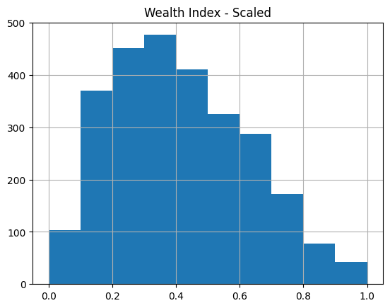

import os
import sys
sys.path.append("../../../")
import getpass
import json
from pathlib import Path
import geopandas as gpd
import numpy as np
import pandas as pd
from sklearn.preprocessing import MinMaxScaler
from povertymapping import dhs, feature_engineering, nightlights, settings
%reload_ext autoreload
%autoreload 2Generate training data
Set Parameters
# Set country-specific variables
country_config = {
"Philippines": {
"country_code": "ph",
"country_osm": "philippines",
"ookla_year": 2019,
"nightlights_year": 2017,
"dhs_household_dta_path": settings.DATA_DIR / "dhs/ph/PHHR71DT/PHHR71FL.DTA",
"dhs_geographic_shp_path": settings.DATA_DIR / "dhs/ph/PHGE71FL/PHGE71FL.shp",
},
"Timor Leste": {
"country_code": "tl",
"country_osm": "east-timor",
"ookla_year": 2019,
"nightlights_year": 2016,
"dhs_household_dta_path": settings.DATA_DIR / "dhs/tl/TLHR71DT/TLHR71FL.DTA",
"dhs_geographic_shp_path": settings.DATA_DIR / "dhs/tl/TLGE71FL/TLGE71FL.shp",
},
"Cambodia": {
"country_code": "kh",
"country_osm": "cambodia",
"ookla_year": 2019,
"nightlights_year": 2014,
"dhs_household_dta_path": settings.DATA_DIR / "dhs/kh/KHHR73DT/KHHR73FL.DTA",
"dhs_geographic_shp_path": settings.DATA_DIR / "dhs/kh/KHGE71FL/KHGE71FL.shp",
},
"Myanmar": {
"country_code": "mm",
"country_osm": "myanmar",
"ookla_year": 2019,
"nightlights_year": 2015,
"dhs_household_dta_path": settings.DATA_DIR / "dhs/mm/MMHR71DT/MMHR71FL.DTA",
"dhs_geographic_shp_path": settings.DATA_DIR / "dhs/mm/MMGE71FL/MMGE71FL.shp",
},
}
# Indicate name of column from dhs data that will be used as the label for training
DHS_LABEL_COL = "Wealth Index"
OUTPUT_LABEL_COL = "Wealth Index - Scaled"
# Tile size for the area around a DHS household cluster to generate features for.
# We set this to 2.4km to match target rollout size of Bing Tile Zoom Level 14 (~2.4km)
TILE_SIZE_KM = 2.4
# For convenience, consider the rollout version as the date of the root notebook folder.
ROLLOUT_DATE = "-".join(os.getcwd().split("/")[-1].split("-")[:3])Set up EOG API Access
The following cell will prompt you to enter your EOG username and password. See this page to learn how to set-up your EOG account.
# Log-in using EOG credentials
username = os.environ.get("EOG_USER", None)
username = username if username is not None else input("Username?")
password = os.environ.get("EOG_PASSWORD", None)
password = password if password is not None else getpass.getpass("Password?")
# set save_token to True so that access token gets stored in ~/.eog_creds/eog_access_token
access_token = nightlights.get_eog_access_token(username, password, save_token=True)2023-04-24 13:02:41.056 | INFO | povertymapping.nightlights:get_eog_access_token:42 - Saving access_token to /home/alron/.eog_creds/eog_access_token.txt
2023-04-24 13:02:41.058 | INFO | povertymapping.nightlights:get_eog_access_token:50 - Adding access token to environment var EOG_ACCESS_TOKENGenerate scaled features and labels per country
%%time
scaler = MinMaxScaler
dhs_gdf_list = []
unscaled_feature_list = []
scaled_features_list = []
labels_list = []
for country, config in country_config.items():
print(f"Loading data for {country}")
# Load the DHS cluster data
dhs_gdf = dhs.generate_dhs_cluster_level_data(
config["dhs_household_dta_path"],
config["dhs_geographic_shp_path"],
col_rename_config=config["country_code"],
convert_geoms_to_bbox=True,
bbox_size_km=TILE_SIZE_KM,
).reset_index(drop=True)
dhs_gdf_list.append(dhs_gdf)
# Create labels array by scaling the specified label_col (ex. Wealth Index)
# Need to extract this before generating features because we'll be dropping the non-feature columns
labels = scaler().fit_transform(dhs_gdf[[DHS_LABEL_COL]])
labels = pd.DataFrame(labels, columns=[OUTPUT_LABEL_COL])
labels_list.append(labels)
# Generate features
# This returns both raw and scaled features. We need to separate them.
features = feature_engineering.generate_features(
dhs_gdf,
config["country_osm"],
config["ookla_year"],
config["nightlights_year"],
sklearn_scaler=scaler,
scaled_only=False,
features_only=True,
)
scaled_feature_cols = [col for col in features.columns if "_scaled" in col]
unscaled_feature_cols = [
col for col in features.columns if col not in scaled_feature_cols
]
unscaled_feature_list.append(features[unscaled_feature_cols])
scaled_features_list.append(features[scaled_feature_cols])
# # Create combined GDF containing features and the label
# country_data = features.copy()
# country_data[OUTPUT_LABEL_COL] = labels
# country_data_list.append(country_data)
# # Combine all country data into a single dataframe
# countries_data = gpd.GeoDataFrame(
# pd.concat(country_data_list, ignore_index=True), crs=country_data_list[0].crs
# )
# Combine the different DF lists
dhs_gdf = pd.concat(dhs_gdf_list, ignore_index=True)
unscaled_features = pd.concat(unscaled_feature_list, ignore_index=True)
features = pd.concat(scaled_features_list, ignore_index=True)
labels = pd.concat(labels_list, ignore_index=True)Loading data for Philippines2023-04-24 13:02:50.436 | INFO | povertymapping.osm:download_osm_country_data:198 - OSM Data: Cached data available for philippines at /home/alron/.geowrangler/osm/philippines? True
2023-04-24 13:02:50.437 | DEBUG | povertymapping.osm:load_pois:160 - OSM POIs for philippines being loaded from /home/alron/.geowrangler/osm/philippines/gis_osm_pois_free_1.shp
2023-04-24 13:02:57.960 | INFO | povertymapping.osm:download_osm_country_data:198 - OSM Data: Cached data available for philippines at /home/alron/.geowrangler/osm/philippines? True
2023-04-24 13:02:57.960 | DEBUG | povertymapping.osm:load_roads:179 - OSM Roads for philippines being loaded from /home/alron/.geowrangler/osm/philippines/gis_osm_roads_free_1.shp
2023-04-24 13:03:49.501 | DEBUG | povertymapping.ookla:load_type_year_data:79 - Contents of data cache: []
2023-04-24 13:03:49.502 | INFO | povertymapping.ookla:load_type_year_data:94 - Cached data available at /home/alron/.geowrangler/ookla/processed/34fe4bfac0d067b5956eadec4fbd2898.csv? True
2023-04-24 13:03:49.502 | DEBUG | povertymapping.ookla:load_type_year_data:99 - Processed Ookla data for aoi, fixed 2019 (key: 34fe4bfac0d067b5956eadec4fbd2898) found in filesystem. Loading in cache.
2023-04-24 13:03:50.064 | DEBUG | povertymapping.ookla:load_type_year_data:79 - Contents of data cache: ['34fe4bfac0d067b5956eadec4fbd2898']
2023-04-24 13:03:50.065 | INFO | povertymapping.ookla:load_type_year_data:94 - Cached data available at /home/alron/.geowrangler/ookla/processed/de73d531d4abc99a42bd40916045c924.csv? True
2023-04-24 13:03:50.066 | DEBUG | povertymapping.ookla:load_type_year_data:99 - Processed Ookla data for aoi, mobile 2019 (key: de73d531d4abc99a42bd40916045c924) found in filesystem. Loading in cache.
2023-04-24 13:03:50.507 | INFO | povertymapping.nightlights:get_clipped_raster:451 - Retrieving clipped raster file /home/alron/.geowrangler/nightlights/clip/295bf47ce6753c7f06ab79012b769f2a.tifLoading data for Timor Leste2023-04-24 13:04:01.163 | INFO | povertymapping.osm:download_osm_country_data:198 - OSM Data: Cached data available for east-timor at /home/alron/.geowrangler/osm/east-timor? True
2023-04-24 13:04:01.164 | DEBUG | povertymapping.osm:load_pois:160 - OSM POIs for east-timor being loaded from /home/alron/.geowrangler/osm/east-timor/gis_osm_pois_free_1.shp
2023-04-24 13:04:02.578 | INFO | povertymapping.osm:download_osm_country_data:198 - OSM Data: Cached data available for east-timor at /home/alron/.geowrangler/osm/east-timor? True
2023-04-24 13:04:02.579 | DEBUG | povertymapping.osm:load_roads:179 - OSM Roads for east-timor being loaded from /home/alron/.geowrangler/osm/east-timor/gis_osm_roads_free_1.shp
2023-04-24 13:04:03.196 | DEBUG | povertymapping.ookla:load_type_year_data:79 - Contents of data cache: []
2023-04-24 13:04:03.197 | INFO | povertymapping.ookla:load_type_year_data:94 - Cached data available at /home/alron/.geowrangler/ookla/processed/0006e572a43b79244fb591a51078be7f.csv? True
2023-04-24 13:04:03.198 | DEBUG | povertymapping.ookla:load_type_year_data:99 - Processed Ookla data for aoi, fixed 2019 (key: 0006e572a43b79244fb591a51078be7f) found in filesystem. Loading in cache.
2023-04-24 13:04:03.332 | DEBUG | povertymapping.ookla:load_type_year_data:79 - Contents of data cache: ['0006e572a43b79244fb591a51078be7f']
2023-04-24 13:04:03.333 | INFO | povertymapping.ookla:load_type_year_data:94 - Cached data available at /home/alron/.geowrangler/ookla/processed/50cac4669b9304f67acf97d6da8c86e9.csv? True
2023-04-24 13:04:03.334 | DEBUG | povertymapping.ookla:load_type_year_data:99 - Processed Ookla data for aoi, mobile 2019 (key: 50cac4669b9304f67acf97d6da8c86e9) found in filesystem. Loading in cache.
2023-04-24 13:04:03.479 | INFO | povertymapping.nightlights:get_clipped_raster:451 - Retrieving clipped raster file /home/alron/.geowrangler/nightlights/clip/b0d0551dd5a67c8eada595334f2655ed.tifLoading data for Cambodia2023-04-24 13:04:07.506 | INFO | povertymapping.osm:download_osm_country_data:198 - OSM Data: Cached data available for cambodia at /home/alron/.geowrangler/osm/cambodia? True
2023-04-24 13:04:07.507 | DEBUG | povertymapping.osm:load_pois:160 - OSM POIs for cambodia being loaded from /home/alron/.geowrangler/osm/cambodia/gis_osm_pois_free_1.shp
2023-04-24 13:04:09.469 | INFO | povertymapping.osm:download_osm_country_data:198 - OSM Data: Cached data available for cambodia at /home/alron/.geowrangler/osm/cambodia? True
2023-04-24 13:04:09.470 | DEBUG | povertymapping.osm:load_roads:179 - OSM Roads for cambodia being loaded from /home/alron/.geowrangler/osm/cambodia/gis_osm_roads_free_1.shp
2023-04-24 13:04:15.132 | DEBUG | povertymapping.ookla:load_type_year_data:79 - Contents of data cache: []
2023-04-24 13:04:15.133 | INFO | povertymapping.ookla:load_type_year_data:94 - Cached data available at /home/alron/.geowrangler/ookla/processed/6bc4328716bb3ab458a001835ee12075.csv? True
2023-04-24 13:04:15.133 | DEBUG | povertymapping.ookla:load_type_year_data:99 - Processed Ookla data for aoi, fixed 2019 (key: 6bc4328716bb3ab458a001835ee12075) found in filesystem. Loading in cache.
2023-04-24 13:04:15.351 | DEBUG | povertymapping.ookla:load_type_year_data:79 - Contents of data cache: ['6bc4328716bb3ab458a001835ee12075']
2023-04-24 13:04:15.352 | INFO | povertymapping.ookla:load_type_year_data:94 - Cached data available at /home/alron/.geowrangler/ookla/processed/b722d8957949c9a4c24e40c8e75a9f1f.csv? True
2023-04-24 13:04:15.353 | DEBUG | povertymapping.ookla:load_type_year_data:99 - Processed Ookla data for aoi, mobile 2019 (key: b722d8957949c9a4c24e40c8e75a9f1f) found in filesystem. Loading in cache.
2023-04-24 13:04:15.590 | INFO | povertymapping.nightlights:get_clipped_raster:451 - Retrieving clipped raster file /home/alron/.geowrangler/nightlights/clip/4791e78094ba7e323fd5814b3f094a84.tifLoading data for Myanmar2023-04-24 13:04:21.080 | INFO | povertymapping.osm:download_osm_country_data:198 - OSM Data: Cached data available for myanmar at /home/alron/.geowrangler/osm/myanmar? True
2023-04-24 13:04:21.081 | DEBUG | povertymapping.osm:load_pois:160 - OSM POIs for myanmar being loaded from /home/alron/.geowrangler/osm/myanmar/gis_osm_pois_free_1.shp
2023-04-24 13:04:23.337 | INFO | povertymapping.osm:download_osm_country_data:198 - OSM Data: Cached data available for myanmar at /home/alron/.geowrangler/osm/myanmar? True
2023-04-24 13:04:23.338 | DEBUG | povertymapping.osm:load_roads:179 - OSM Roads for myanmar being loaded from /home/alron/.geowrangler/osm/myanmar/gis_osm_roads_free_1.shp
2023-04-24 13:04:37.831 | DEBUG | povertymapping.ookla:load_type_year_data:79 - Contents of data cache: []
2023-04-24 13:04:37.832 | INFO | povertymapping.ookla:load_type_year_data:94 - Cached data available at /home/alron/.geowrangler/ookla/processed/2100117ec1967ae3e6d875971fb23fc6.csv? True
2023-04-24 13:04:37.832 | DEBUG | povertymapping.ookla:load_type_year_data:99 - Processed Ookla data for aoi, fixed 2019 (key: 2100117ec1967ae3e6d875971fb23fc6) found in filesystem. Loading in cache.
2023-04-24 13:04:37.988 | DEBUG | povertymapping.ookla:load_type_year_data:79 - Contents of data cache: ['2100117ec1967ae3e6d875971fb23fc6']
2023-04-24 13:04:37.989 | INFO | povertymapping.ookla:load_type_year_data:94 - Cached data available at /home/alron/.geowrangler/ookla/processed/df165221cada388b00e5495ceef4d733.csv? True
2023-04-24 13:04:37.989 | DEBUG | povertymapping.ookla:load_type_year_data:99 - Processed Ookla data for aoi, mobile 2019 (key: df165221cada388b00e5495ceef4d733) found in filesystem. Loading in cache.
2023-04-24 13:04:38.169 | INFO | povertymapping.nightlights:get_clipped_raster:451 - Retrieving clipped raster file /home/alron/.geowrangler/nightlights/clip/7a58f067614b6685cd9bb62d4d15a249.tifCPU times: user 1min 56s, sys: 2.25 s, total: 1min 58s
Wall time: 1min 58s# Uncomment to visualize the DHS clusters
# dhs_gdf.explore()features.describe()| poi_count_scaled | atm_count_scaled | atm_nearest_scaled | bank_count_scaled | bank_nearest_scaled | bus_station_count_scaled | bus_station_nearest_scaled | cafe_count_scaled | cafe_nearest_scaled | charging_station_count_scaled | ... | mobile_2019_mean_avg_d_kbps_mean_scaled | mobile_2019_mean_avg_u_kbps_mean_scaled | mobile_2019_mean_avg_lat_ms_mean_scaled | mobile_2019_mean_num_tests_mean_scaled | mobile_2019_mean_num_devices_mean_scaled | avg_rad_min_scaled | avg_rad_max_scaled | avg_rad_mean_scaled | avg_rad_std_scaled | avg_rad_median_scaled | |
|---|---|---|---|---|---|---|---|---|---|---|---|---|---|---|---|---|---|---|---|---|---|
| count | 2720.000000 | 2720.000000 | 2720.000000 | 2720.000000 | 2720.000000 | 2720.0 | 2720.0 | 2720.000000 | 2720.000000 | 2720.0 | ... | 2720.000000 | 2720.000000 | 2720.000000 | 2720.000000 | 2720.000000 | 2720.000000 | 2720.000000 | 2720.000000 | 2720.000000 | 2720.000000 |
| mean | 0.035698 | 0.022826 | 0.675597 | 0.026877 | 0.602787 | 0.0 | 0.0 | 0.024206 | 0.616884 | 0.0 | ... | 0.097045 | 0.125565 | 0.052047 | 0.046824 | 0.045255 | 0.044949 | 0.051669 | 0.056217 | 0.049536 | 0.055336 |
| std | 0.112536 | 0.092017 | 0.419728 | 0.105493 | 0.428603 | 0.0 | 0.0 | 0.100680 | 0.431866 | 0.0 | ... | 0.128736 | 0.155018 | 0.080013 | 0.118130 | 0.112844 | 0.129444 | 0.126482 | 0.142177 | 0.118784 | 0.146027 |
| min | 0.000000 | 0.000000 | 0.000000 | 0.000000 | 0.000000 | 0.0 | 0.0 | 0.000000 | 0.000000 | 0.0 | ... | 0.000000 | 0.000000 | 0.000000 | 0.000000 | 0.000000 | 0.000000 | 0.000000 | 0.000000 | 0.000000 | 0.000000 |
| 25% | 0.000000 | 0.000000 | 0.196304 | 0.000000 | 0.094639 | 0.0 | 0.0 | 0.000000 | 0.094595 | 0.0 | ... | 0.000000 | 0.000000 | 0.000000 | 0.000000 | 0.000000 | 0.003150 | 0.000853 | 0.001480 | 0.000574 | 0.001411 |
| 50% | 0.000000 | 0.000000 | 1.000000 | 0.000000 | 0.815812 | 0.0 | 0.0 | 0.000000 | 0.930522 | 0.0 | ... | 0.054145 | 0.080528 | 0.033424 | 0.006959 | 0.008159 | 0.004683 | 0.003282 | 0.003324 | 0.002965 | 0.002819 |
| 75% | 0.009174 | 0.000000 | 1.000000 | 0.000000 | 1.000000 | 0.0 | 0.0 | 0.000000 | 1.000000 | 0.0 | ... | 0.147490 | 0.190146 | 0.073159 | 0.037401 | 0.034313 | 0.012871 | 0.035032 | 0.027659 | 0.036972 | 0.021257 |
| max | 1.000000 | 1.000000 | 1.000000 | 1.000000 | 1.000000 | 0.0 | 0.0 | 1.000000 | 1.000000 | 0.0 | ... | 1.000000 | 1.000000 | 1.000000 | 1.000000 | 1.000000 | 1.000000 | 1.000000 | 1.000000 | 1.000000 | 1.000000 |
8 rows × 61 columns
labels.hist()array([[<AxesSubplot: title={'center': 'Wealth Index - Scaled'}>]],
dtype=object)
Save training data and column metadata
data_gdf = pd.concat([dhs_gdf, unscaled_features, features, labels], axis=1)
data_gdf.to_csv(f"{ROLLOUT_DATE}-training-data.csv", index=False)feature_cols = features.columns.tolist()
metadata_cols = [
col for col in data_gdf if col not in feature_cols and col != OUTPUT_LABEL_COL
]
metadata = {
"features": feature_cols,
"label": OUTPUT_LABEL_COL,
"metadata": metadata_cols,
"unscaled_features": unscaled_features.columns.tolist(),
}
filepath = f"{ROLLOUT_DATE}-training-data-columns.json"
with open(filepath, "w") as file:
json.dump(metadata, file, indent=4)